Umetanje tekstualnih objekata
U Uređivaču tabela možete skrenuti pažnju na određeni deo tabele tako što ćete umetnuti tekstualno polje (pravougaoni okvir koji vam omogućava da unesete tekst u njega) ili Tekst Art objekat (tekstualno polje sa unapred definisanim stilom fonta i bojom koje omogućava primenu određenih efekata teksta).
Dodavanje tekstualnog objekta
Tekstualni objekat možete dodati bilo gde na radnom listu. Da biste to uradili:
- prebacite se na karticu Umetanje na gornjoj traci sa alatkama,
- izaberite potrebnu vrstu tekstualnog objekta:
- da biste dodali tekstualno polje, kliknite na ikonu Tekstualno polje na gornjoj traci sa alatkama, zatim kliknite na mesto gde želite da umetnete tekstualno polje, držite taster miša i prevucite ivicu tekstualnog polja da biste odredili njegovu veličinu. Kada otpustite taster miša, pojaviće se mesto za unos teksta u dodatom tekstualnom polju i moći ćete da unesete svoj tekst.
Tekstualno polje je takođe moguće umetnuti klikom na ikonu Oblik na gornjoj traci sa alatkama i izborom automatskog oblika Umetni tekst iz grupe Osnovni oblici.
- da biste dodali Tekst Art objekat, kliknite na ikonu Tekst Art na gornjoj traci sa alatkama, zatim kliknite na željeni šablon stila – Tekst Art objekat će biti dodat u centar radnog lista. Izaberite podrazumevani tekst unutar tekstualnog polja pomoću miša i zamenite ga sopstvenim tekstom.
- da biste dodali tekstualno polje, kliknite na ikonu Tekstualno polje na gornjoj traci sa alatkama, zatim kliknite na mesto gde želite da umetnete tekstualno polje, držite taster miša i prevucite ivicu tekstualnog polja da biste odredili njegovu veličinu. Kada otpustite taster miša, pojaviće se mesto za unos teksta u dodatom tekstualnom polju i moći ćete da unesete svoj tekst.
- kliknite van tekstualnog objekta da biste primenili izmene i vratili se na radni list.
Tekst unutar tekstualnog objekta je njegov sastavni deo (kada pomerate ili rotirate tekstualni objekat, tekst se pomera ili rotira zajedno sa njim).
Pošto umetnuti tekstualni objekat predstavlja pravougaoni okvir sa tekstom u njemu (Tekst Art objekti podrazumevano imaju nevidljive ivice tekstualnog polja) i ovaj okvir je uobičajen automatski oblik, možete menjati i svojstva oblika i teksta.
Tekstualni objekat možete sačuvati kao sliku na svom računaru pomoću opcije Sačuvaj kao sliku u meniju desnog klika.
Da biste obrisali dodati tekstualni objekat, kliknite na ivicu tekstualnog polja i pritisnite taster Delete na tastaturi. Tekst unutar tekstualnog polja će takođe biti obrisan.
Formatiranje tekstualnog polja
Izaberite tekstualno polje klikom na njegovu ivicu da biste promenili njegova svojstva. Kada je tekstualno polje izabrano, njegove ivice su prikazane punim (ne isprekidanim) linijama.
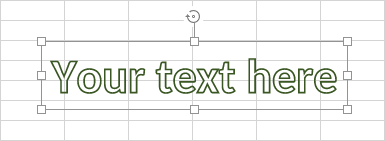
- da biste ručno promenili veličinu, pomerili ili rotirali tekstualno polje, koristite posebne ručke na ivicama oblika.
- da biste izmenili ispunu tekstualnog polja, liniju, zamenili pravougaoni okvir drugim oblikom ili pristupili naprednim podešavanjima oblika, kliknite na ikonu Podešavanja oblika na desnoj bočnoj traci i koristite odgovarajuće opcije.
- da biste rasporedili tekstualna polja u odnosu na druge objekte, poravnali više tekstualnih polja međusobno, rotirali ili okrenuli tekstualno polje, kliknite desnim tasterom miša na ivicu tekstualnog polja i koristite opcije iz kontekstnog menija. Da biste saznali više o raspoređivanju i poravnavanju objekata, pogledajte ovu stranicu.
- da biste kreirali kolone teksta unutar tekstualnog polja, kliknite desnim tasterom miša na ivicu tekstualnog polja, izaberite opciju Napredna podešavanja oblika i prebacite se na karticu Kolone u prozoru Oblik – Napredna podešavanja.
Formatiranje teksta unutar tekstualnog polja
Kliknite na tekst unutar tekstualnog polja da biste promenili njegova svojstva. Kada je tekst izabran, ivice tekstualnog polja su prikazane isprekidanim linijama.
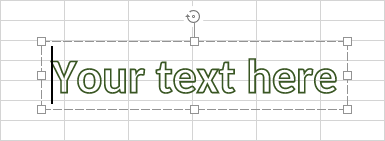
Moguće je promeniti formatiranje teksta i kada je izabrano tekstualno polje (a ne sam tekst). U tom slučaju, sve promene će biti primenjene na sav tekst unutar tekstualnog polja. Neke opcije formatiranja fonta (vrsta fonta, veličina, boja i stilovi dekoracije) mogu se zasebno primeniti na prethodno izabrani deo teksta.
- Podesite formatiranje fonta (promena vrste fonta, veličine, boje i primena stilova dekoracije) pomoću odgovarajućih ikona koje se nalaze na kartici Početna gornje trake sa alatkama. Dodatna podešavanja fonta mogu se promeniti i na kartici Font u prozoru svojstava pasusa. Da biste mu pristupili, kliknite desnim tasterom miša na tekst u tekstualnom polju i izaberite opciju Napredna podešavanja pasusa.
- Poravnajte tekst horizontalno unutar tekstualnog polja pomoću odgovarajućih ikona na kartici Početna gornje trake sa alatkama ili u prozoru Pasus – Napredna podešavanja.
- Poravnajte tekst vertikalno unutar tekstualnog polja pomoću odgovarajućih ikona na kartici Početna gornje trake sa alatkama. Takođe možete kliknuti desnim tasterom miša na tekst, izabrati opciju Vertikalno poravnanje i zatim izabrati jednu od dostupnih opcija: Poravnaj gore, Poravnaj u sredinu ili Poravnaj dole.
- Rotirajte tekst unutar tekstualnog polja. Da biste to uradili, kliknite desnim tasterom miša na tekst, izaberite opciju Smer teksta i zatim izaberite jednu od dostupnih opcija: Horizontalno (podrazumevano izabrano), Rotiraj tekst nadole (postavlja vertikalni smer, od vrha ka dnu) ili Rotiraj tekst nagore (postavlja vertikalni smer, od dna ka vrhu).
-
Kreirajte nabrajanu ili numerisanu listu. Da biste to uradili, kliknite desnim tasterom miša na tekst, izaberite opciju Nabrajanje i numerisanje iz kontekstnog menija i zatim izaberite jedan od dostupnih znakova za nabrajanje ili stilova numerisanja.
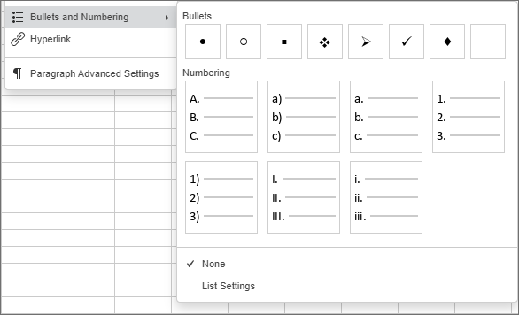
Opcija Podešavanja liste omogućava vam da otvorite prozor Podešavanja liste gde možete prilagoditi podešavanja za odgovarajući tip liste:
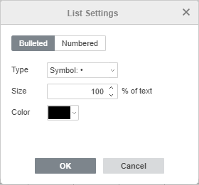
Tip (nabrajana) – omogućava izbor potrebnog znaka za nabrajanu listu. Kada kliknete na opciju Novi znak, otvoriće se prozor Simbol i moći ćete da izaberete jedan od dostupnih znakova. Da biste saznali više o radu sa simbolima, pogledajte ovaj članak.
Kada kliknete na opciju Nova slika, pojaviće se novo polje Uvoz gde možete izabrati nove slike za oznake liste Iz datoteke, Sa URL-a ili Iz skladišta.
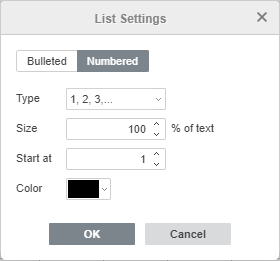
Tip (numerisana) – omogućava izbor potrebnog formata za numerisanu listu.
- Veličina – omogućava izbor potrebne veličine oznake/broja u odnosu na trenutnu veličinu teksta. Vrednost može varirati od 25% do 400%.
- Boja – omogućava izbor potrebne boje oznake/broja. Možete izabrati jednu od tema boja ili standardnih boja na paleti ili definisati prilagođenu boju.
- Počni od – omogućava postavljanje početne numeričke vrednosti za numerisanje.
- Umetnite hipervezu.
-
Podesite razmak između redova i pasusa za višelinijski tekst unutar tekstualnog polja pomoću kartice Podešavanja pasusa na desnoj bočnoj traci koja će se otvoriti kada kliknete na ikonu Podešavanja pasusa . Podesite visinu reda za tekst u pasusu, kao i margine između trenutnog i prethodnog ili sledećeg pasusa.
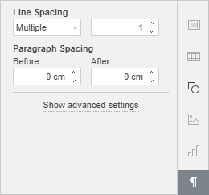
- Razmak između redova – podešava visinu reda za tekst u pasusu. Možete izabrati jednu od dve opcije: višestruko (postavlja razmak izražen brojevima većim od 1) ili tačno (postavlja fiksni razmak). Potrebnu vrednost možete uneti u polje sa desne strane.
-
Razmak između pasusa – podešava količinu prostora između pasusa.
- Pre – podešava količinu prostora pre pasusa.
- Posle – podešava količinu prostora posle pasusa.
Ovi parametri se takođe mogu pronaći u prozoru Pasus – Napredna podešavanja.
Prilagođavanje naprednih podešavanja pasusa
Promenite napredna podešavanja pasusa (možete prilagoditi uvlačenja pasusa i tabulatore za višelinijski tekst unutar tekstualnog polja i primeniti neka podešavanja formatiranja fonta). Postavite kursor unutar željenog pasusa – kartica Podešavanja pasusa će se aktivirati na desnoj bočnoj traci. Kliknite na vezu Prikaži napredna podešavanja. Takođe je moguće kliknuti desnim tasterom miša na tekst u tekstualnom polju i koristiti stavku Napredna podešavanja pasusa iz kontekstnog menija. Otvoriće se prozor sa svojstvima pasusa:
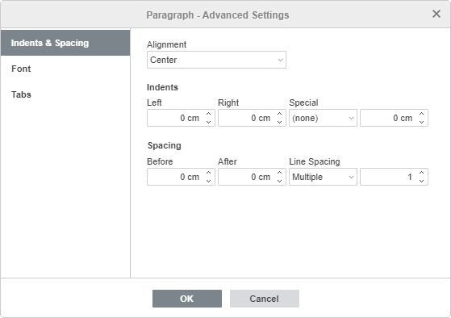
Kartica Uvlačenja i razmaci omogućava vam da:
- promenite tip poravnanja teksta pasusa,
-
promenite uvlačenja pasusa u odnosu na unutrašnje margine tekstualnog polja,
- Levo – postavlja odstupanje pasusa od leve unutrašnje margine tekstualnog polja unosom potrebne numeričke vrednosti,
- Desno – postavlja odstupanje pasusa od desne unutrašnje margine tekstualnog polja unosom potrebne numeričke vrednosti,
- Posebno – postavlja uvlačenje za prvi red pasusa: izaberite odgovarajuću stavku menija ((nema), Prvi red, Viseće) i promenite podrazumevanu numeričku vrednost za Prvi red ili Viseće,
- promenite razmak između redova u pasusu.
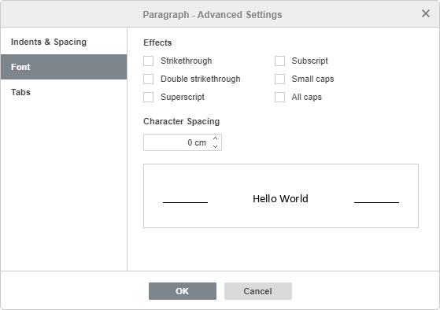
Kartica Font sadrži sledeće parametre:
- Precrtano – koristi se za precrtavanje teksta linijom koja prolazi kroz slova.
- Dvostruko precrtano – koristi se za precrtavanje teksta dvostrukom linijom koja prolazi kroz slova.
- Eksponent – koristi se za smanjenje teksta i njegovo postavljanje u gornji deo reda teksta, npr. kod razlomaka.
- Indeks – koristi se za smanjenje teksta i njegovo postavljanje u donji deo reda teksta, npr. kod hemijskih formula.
- Mala slova – koristi se za pretvaranje svih slova u mala.
- Velika slova – koristi se za pretvaranje svih slova u velika.
- Razmak između znakova – koristi se za podešavanje razmaka između znakova. Povećajte podrazumevanu vrednost da biste primenili Prošireni razmak ili smanjite podrazumevanu vrednost da biste primenili Zbijeni razmak. Koristite dugmad sa strelicama ili unesite potrebnu vrednost u polje.
Sve promene će biti prikazane u polju za pregled ispod.
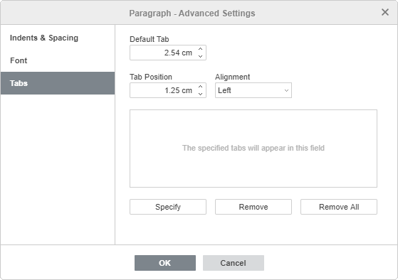
Kartica Tabulator omogućava vam da promenite pozicije tabulatora, odnosno mesto na koje se kursor pomera kada pritisnete taster Tab na tastaturi.
- Podrazumevani tabulator je postavljen na 2,54 cm. Ovu vrednost možete smanjiti ili povećati pomoću dugmadi sa strelicama ili unosom potrebne vrednosti u polje.
- Pozicija tabulatora – koristi se za postavljanje prilagođenih tabulatora. Unesite potrebnu vrednost u ovo polje, preciznije je podesite pomoću dugmadi sa strelicama i kliknite na dugme Navedi. Vaša prilagođena pozicija tabulatora biće dodata na listu u polju ispod.
-
Poravnanje – koristi se za postavljanje potrebnog tipa poravnanja za svaku poziciju tabulatora sa gornje liste. Izaberite željenu poziciju tabulatora sa liste, izaberite opciju Levo, Centar ili Desno iz padajuće liste Poravnanje i kliknite na dugme Navedi.
- Levo – poravnava tekst sa leve strane na poziciji tabulatora; tekst se pomera udesno dok kucate.
- Centar – centrira tekst na poziciji tabulatora.
- Desno – poravnava tekst sa desne strane na poziciji tabulatora; tekst se pomera ulevo dok kucate.
Da biste obrisali tabulatore sa liste, izaberite tabulator i kliknite na dugme Ukloni ili Ukloni sve.
Dodeljivanje makroa tekstualnom polju
Možete omogućiti brz i jednostavan pristup makrou unutar tabele dodeljivanjem makroa bilo kom tekstualnom polju. Kada dodelite makro, tekstualno polje se prikazuje kao dugme i možete pokrenuti makro svaki put kada kliknete na njega.
Da biste dodelili makro:
-
Kliknite desnim tasterom miša na tekstualno polje kojem želite da dodelite makro i izaberite opciju Dodeli makro iz padajućeg menija.

- Otvoriće se dijalog Dodeli makro
-
Izaberite makro sa liste ili unesite naziv makroa i kliknite na OK da biste potvrdili.

Izmena stila Tekst Art-a
Izaberite tekstualni objekat i kliknite na ikonu Podešavanja Tekst Art-a na desnoj bočnoj traci.
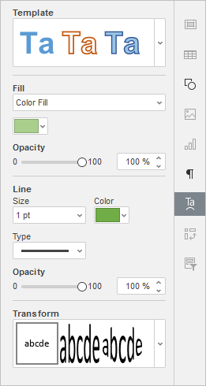
- Promenite primenjeni stil teksta izborom novog Šablona iz galerije. Takođe možete dodatno promeniti osnovni stil izborom druge vrste fonta, veličine itd.
- Promenite ispunu i liniju fonta. Dostupne opcije su iste kao i za automatske oblike.
- Primeni efekat teksta izborom potrebnog tipa transformacije teksta iz galerije Transformacija. Stepen deformacije teksta možete prilagoditi prevlačenjem ručke u obliku roze dijamanta.
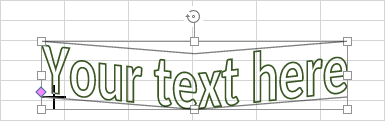